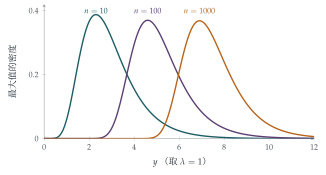

STEP III 2025，第 11 题
继续之前，请先阅读题目（原题为英文）。题目载于 OCR 提供下载的 2025 年 STEP 试卷（zip 文件）内的 STEP III 试卷： www.ocr.org.uk/Images/750486-2025-past-papers.zip
引子
下一个世纪最高的洪水会有多高？一千个灯泡之中，寿命最长的那个能用多久？在 \(n\) 名参赛者之中，跑得最快的马拉松选手会有多快？这类关于极值（extremes）的问题，即许多随机数值之中最大或最小的一个，在工程、保险和气候科学中都极为重要，而极值的表现与平均值截然不同。
本题要找出 \(n\) 个指数分布（exponential distribution）寿命中最大者的分布。它的典型大小按 \(\ln n\) 增长，虽然缓慢，却没有上限。然而它的离散程度却完全不会增长：一千个寿命中的最大值，其可预测的程度与十个寿命中的最大值大致相同。在极限情况下，它的分布形状就是耿贝尔分布（Gumbel distribution），也就是极值世界中与正态曲线相对应的角色。
动笔之前
\(X_1, \ldots, X_n\) 中的最大者不超过 \(y\)，恰好等同于发生了甚么事？
\(Y \leq y\) 恰好在每个 \(X_i \leq y\) 时成立。利用独立性（independence），这个概率便化为一个乘积。
逐步解题
阶段 1 最大值的分布
每个 \(X_i\) 在 \(y \geq 0\) 时都有 \(\mathrm{F}(y) = 1 - e^{-\lambda y}\)，由独立性可得 \[\mathrm{G}(y) = \mathrm{P}(X_1 \leq y, \ldots, X_n \leq y) = \bigl(1 - e^{-\lambda y}\bigr)^n. \qed\]
阶段 2 分位数
由 \(\mathrm{G}(L) = \alpha\) 解出 \(L\)。然后解 \(\mathrm{G}(U) = 1 - \alpha\)。
由 \(\bigl(1 - e^{-\lambda L}\bigr)^n = \alpha\) 得 \(e^{-\lambda L} = 1 - \alpha^{1/n}\)，所以 \[L(\alpha) = -\frac1\lambda\ln\bigl(1 - \alpha^{1/n}\bigr), \qquad U(\alpha) = -\frac1\lambda\ln\bigl(1 - (1 - \alpha)^{1/n}\bigr). \qed\]
阶段 3 \(n\) 很大的情况
把 \(\alpha^{1/n} = e^{(\ln\alpha)/n}\) 写出来。当 \(n\) 很大时，指数很小。那么 \(1 - \alpha^{1/n}\) 近似于甚么？
\(\alpha^{1/n} = e^{(\ln\alpha)/n} \approx 1 + \frac{\ln\alpha}{n}\)，所以 \(1 - \alpha^{1/n} \approx \frac{-\ln\alpha}{n} = \frac{\ln(1/\alpha)}{n}\)。因此 \[\lambda L(\alpha) \approx -\ln\frac{\ln(1/\alpha)}{n} = \ln n - \ln\Bigl(\ln\frac1\alpha\Bigr). \qed\] 同理，\(\lambda U(\alpha) \approx \ln n - \ln\bigl(\ln\frac{1}{1 - \alpha}\bigr)\)。
阶段 4 增长与离散程度
中位数（median）是 \(L(\frac12)\)，而 \(\lambda L(\frac12) \approx \ln n - \ln\ln2 \to \infty\)。但是 \[\lambda\bigl(U(\alpha) - L(\alpha)\bigr) \approx \ln\Bigl(\ln\frac1\alpha\Bigr) - \ln\Bigl(\ln\frac{1}{1 - \alpha}\Bigr),\] 当中的 \(\ln n\) 项已互相抵消：区间的阔度与 \(n\) 无关。■
阶段 5 一个 \(90\%\) 区间
取 \(\alpha = 0.05\)。\(\ln\frac1\alpha = \ln 20\) 和 \(\ln\frac{1}{0.95}\) 大约是多少？
当 \(\alpha = 0.05\) 时，\(\ln20 \approx 3\)，所以 \(\ln\ln\frac1\alpha \approx \ln3\)。另外 \(\ln\frac{1}{0.95} = -\ln(1 - 0.05) \approx 0.05 = \frac{1}{20}\)，所以 \(\ln\ln\frac{1}{1 - \alpha} \approx \ln\frac{1}{20} \approx -3\)。因此阔度约为 \(\frac1\lambda(\ln3 + 3) \approx \frac{4.1}{\lambda}\)，而 \(Y\) 以概率 \(0.9\) 落在 \([L(0.05), U(0.05)]\) 之内，这个区间的阔度约为 \(4\lambda^{-1}\)。■

回顾
所有值都不超过 \(y\) 时，最大值亦然。独立性使最大值的分布函数成为一个幂。
以反函数求分位数。解 \(\mathrm{G}(y) = \alpha\) 便得出区间两端的精确公式。
先近似，再比较。\(L\) 和 \(U\) 的近似式都含有 \(\ln n\)，在计算阔度时互相抵消。
背后的数学
耿贝尔分布
由于 \(\mathrm{P}(\lambda Y - \ln n \leq x) = \bigl(1 - \frac{e^{-x}}{n}\bigr)^n \to \exp(-e^{-x})\)，平移后的最大值 \(\lambda Y - \ln n\) 在极限下服从耿贝尔分布，其分布函数（distribution function）为 \(\exp(-e^{-x})\)。它的平均值是欧拉常数（Euler’s constant）\(\gamma \approx 0.577\)。你其实早已遇过它：集齐全部 \(n\) 款优惠券所需的时间（第 9.11 节）就是 \(n\) 个（接近独立的）等待时间中的最大值，这正是它约为 \(n\ln n + \gamma n\) 的原因，而其波动属耿贝尔型，数量级为 \(n\)。
极值理论
费雪（Fisher）、Tippett 和格涅坚科（Gnedenko）有一个非凡的定理（1928–1943）：许多独立同分布（independent identically distributed）的变量，其最大值经适当平移和缩放后，极限形状只可能有三种：耿贝尔型（适用于轻尾分布，例如指数分布或正态分布）、弗雷歇（Fréchet）型（适用于重尾分布，例如柯西（Cauchy）分布）和韦布尔（Weibull）型（适用于有硬性上限的变量）。这是中心极限定理（central limit theorem）（第 12.24 节）在极值方面的对应结果，所属的学问称为极值理论（extreme value theory）。工程师用它来设计防洪设施和海上平台，以抵御“百年一遇的巨浪”；保险公司用它为巨灾保障定价；气候科学家则用它来估计热浪正在怎样变化。
Emil Julius Gumbel（耿贝尔）是德国统计学家，直言不讳地反对纳粹，1932 年被迫离开大学教席，最终逃往美国。他在 1930 和 1940 年代把极值理论应用于河流泛滥的研究。他的著作 Statistics of Extremes（1958）使这门学问成为实用的工具。荷兰的三角洲工程（Delta Works）是在 1953 年北海洪灾之后为保护荷兰而兴建的，设计时就运用了极值统计学，以抵御预计约 \(10\,000\) 年一遇的风暴潮。
思维技巧
对于独立变量的最大值，\(\mathrm{P}(\max \leq y) = \prod\mathrm{P}(X_i \leq y)\)；对于最小值，\(\mathrm{P}(\min > y) = \prod\mathrm{P}(X_i > y)\)。
这一个想法就能处理最近的超级市场（第 12.19 节）、第一班巴士（第 12.18 节）和寿命最长的灯泡。在大学里，它是次序统计量（order statistics）和极值理论的起点。
延伸练习
最大值的期望值。证明 \(\mathrm{E}(Y) = \frac1\lambda\bigl(1 + \frac12 + \cdots + \frac1n\bigr)\)。（提示：根据无记忆性（memorylessness），\(n\) 个寿命中的第一个结束之后，余下的 \(n - 1\) 个会重新开始。）
最小值。证明 \(X_1, \ldots, X_n\) 中的最小者服从参数为 \(n\lambda\) 的指数分布。
中位数的精确值。求 \(Y\) 的精确中位数，并在 \(n = 10\) 时与近似值 \(\frac1\lambda(\ln n - \ln\ln2)\) 比较。
均匀分布的最大值。若 \(X_1, \ldots, X_n\) 在 \([0, 1]\) 上均匀分布（uniform），求它们的最大值 \(M\) 的分布，并证明当 \(n\) 很大时，\(n(1 - M)\) 近似服从指数分布。这属于三种极值形状中的哪一种？
延伸阅读
Stuart Coles, An Introduction to Statistical Modeling of Extreme Values（Springer）。标准的入门书，附有洪水和海平面的真实数据。
Emil Julius Gumbel, Statistics of Extremes（Dover）。经典之作。
David Spiegelhalter, The Art of Uncertainty（Pelican），谈罕见事件以及应该怎样思考它们。